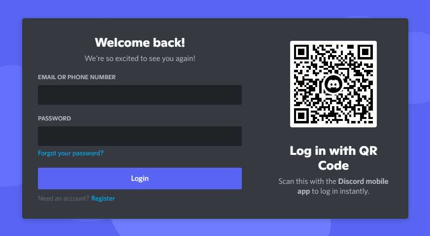

May 9, 2022
Discord QR Code Phishing
QR codes have been in the news recently, and for good reason; we've spent years honing our suspicious link recognition instincts, only for them to be utterly sidestepped by our QR code scanning obsession. This has given rise to new versions of familiar old attacks with terrible names like "quishing". Today, we're going to be looking at how scammers are exploiting Discord's QR code login feature.
It all starts with a message like this from a friend.
So you join the server, and you're greeted with a request for verification:
Once you scan the code, that's it—you've handed total access of your account to whoever generated the sign-in link.
How It Works §
If you haven't logged into Discord recently, here's what you are greeted with when you are not signed in to the app.

Here's what the intended usage looks like: you scan the QR code on your phone (where you're already signed into Discord); this launches the app, which then prompts you whether you want to log in.

If you tap "Yes, log me in", this triggers an authenticated request to Discord's servers, which then signs you in wherever the QR code was first generated. As you can see, this system is ripe for abuse when combined with a little bit of social engineering. If you are unlucky enough to sign in without heeding Discord's warning, this is what you're greeted with:
And soon afterwards…
…you become one with the horde.
How To Protect Yourself §
It's entirely up to you to stay safe against these types of attacks; the possibility of someone abusing this mechanism to gain access to your account is, unfortunately, intended functionality.
Luckily, the steps you need to take are simple. Simply avoid ever scanning an unfamiliar QR code in the Discord app; I would frankly recommend completely avoiding this method of sign-in.
Sharing your QR code should not make you vulnerable as the QR codes do not appear to be associated with any user accounts—after all, they're generated before you've signed in. Still, I would err on the side of caution and not do that.